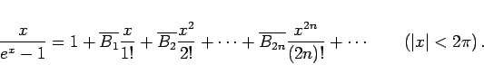
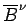
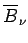
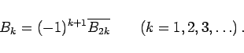

Inhalt Index DeskTop Bronstein

 Unendliche Reihen Reihen mit konstanten Gliedern Einige spezielle Reihen Bernoullische und Eulersche Zahlen
Unendliche Reihen Reihen mit konstanten Gliedern Einige spezielle Reihen Bernoullische und Eulersche Zahlen


Manche Autoren gehen zur Definition der BERNOULLIschen Zahlen von der folgenden Darstellung aus:
|  | (7.61b) |
Dadurch erhält man die Rekursionsformel
wobei nach Anwendung des binomischen Satzes überall  durch  zu ersetzen ist, d.h der Exponent wird zum Index. Für die ersten Zahlen gilt:
|  | (7.61e) |